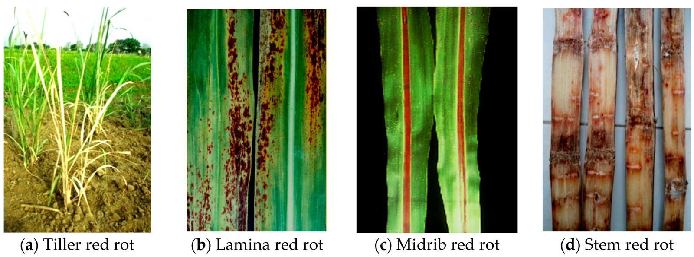
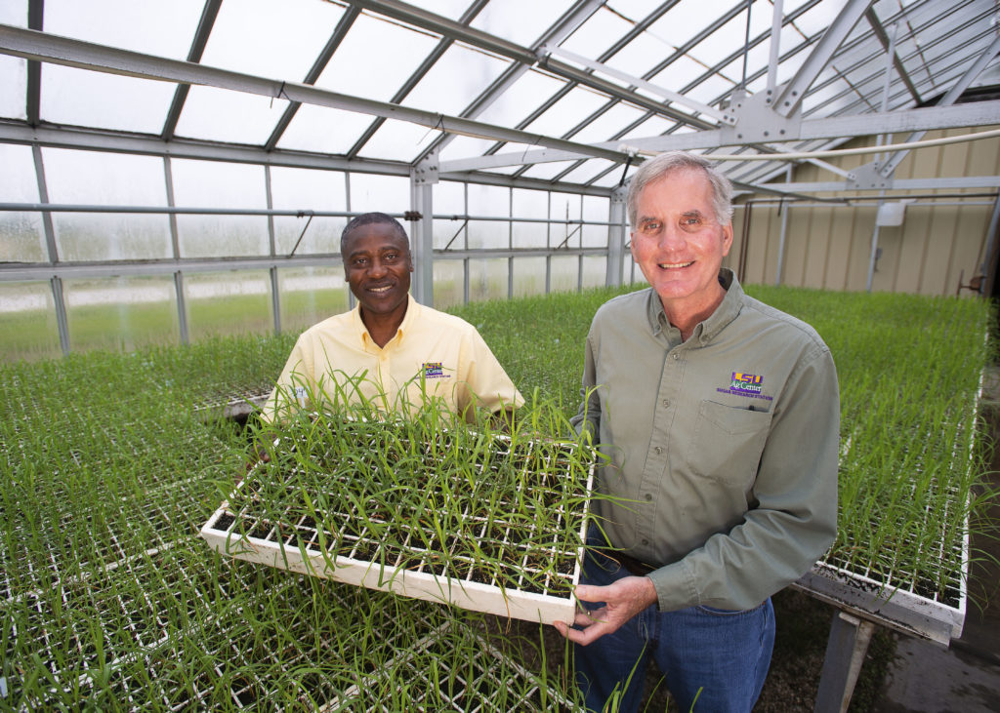

Sugarcane crop thrives best in hot sunny tropical areas. The ideal climate for sugarcane is a long, warm growing season with a high incidence of solar radiation and adequate moisture in the soil. Areas with high rainfall and/or good irrigation are best suited for sugarcane cultivation.Sugarcane can be successfully raised on diverse soil types ranging from sandy soils to clay loams & heavy clays. However, a well-drained, deep, loamy soil is considered ideal for sugarcane cultivation.
1. Sugarcane stands in the field for more than one year hence, land is prepared by giving two deep ploughing.
2. First ploughing is given immediately after the harvesting of previous crop with mould board plough or tractor.
3. The land is exposed to sun for one to two months.
4. The clods are crushed with clod crusher or Norwegian harrow.
5. 35-50 tons FYM/ha. is added to soil.
6. Second crosswise ploughing is given by wooden plough.
7. 2-3 harrowing are given and soil is brought to clod free tilt.
8. Land is leveled with the help of planker and seed bed is prepared.
The sugarcane plant is subject to many diseases. Sereh, a blackening and degeneration of the fanlike tops, is caused by an East Indian virus. Mosaic, which causes mottling or spotting of foliage and sometimes curling, dwarfing, and narrowing of the leaves, is due to infection by any of several viruses. Red rot (important in Indonesia and South Asia) is characterized by interrupted red and white patches within the cane along with a sour alcoholic odour when the cane is split open. Caused by the fungus Colletotrichum falcatum (Glomerella tucumanensis), red rot first attracts attention by a yellowing and withering of the leaf, and eventually the entire plant dies. Gumming disease (important in New South Wales, Australia) is characterized by gummosis, the pathological production of gummy exudates as a result of cell degeneration; it is caused by the bacterium Xanthomonas vasculorum. Fiji disease, a virus disease first reported from the Fiji islands, is characterized by elongated white to brown swellings on the underside of the leaves, followed by stunting and death. Leaf scald is a vascular disease caused by the bacterium Xanthomonas albilineans, characterized by creamy or grayish streaking and later withering of the leaves. Eyespot, characterized by yellowish oval lesions on leaves and stems, is a disease caused by the fungus Helminthosporium sacchari. Epidemics of these diseases have been checked by replacing the susceptible varieties of cane with varieties resistant to the disease.
 Sugarcane is attacked and damaged by various insect pests that bore into and feed on the different parts of the plant. Control measures include biological control by parasites or predators, chemical control by insecticides, and the introduction of resistant cane varieties.
The moth borer, Diatraea saccharalis, which is widely distributed throughout cane-growing areas, is capable of causing extensive damage when out of control. The sugarcane leafhopper and the anomala grub yielded to biological control in Hawaii when other measures were unsuccessful. Various predator animals live on insects destructive to the sugarcane. For example, in Queensland, Australia, the bandicoot, an insectivorous marsupial, is a diligent destroyer of white grubs.
The insect pest responsible for some of the greatest crop losses is the grayback beetle in its larval stage. Effective grub control is obtained by applying the insecticide benzene hexachloride after the young cane plant has germinated and stooled, though this chemical has been banned in many countries. Sugarcane can be protected against wireworms by applying insecticides when cane sets are planted. Rats, which destroy part of the stalk, are controlled by poisoning and trapping.
Sugarecane was originally cultivated by natives of southern Pacific islands. Most present-day commercial canes are the offsprings or hybrids directly descended from the Cheribon cane (Saccharum officinarum), a Javan noble cane which was developed from a wild cane species, S. robustom. Noble canes, which represent the highest development of the species, are characterized by thick barrel-shaped internodes, or segments; large soft-rinded juicy stalks; and high sugar content.
 The purpose of sugarcane breeding is to produce new hybrid varieties that will be immune, or resistant, to diseases and insect pests and will increase the production of sugar per unit area, yielding canes of higher sugar content and better fabrication qualities. Many of the original noble canes were susceptible to some serious diseases, but their hybridization with wild canes has improved their hardiness. For example, the wild cane S. spontaneum contains little sugar, and it is immune to most diseases; it has been used extensively by breeders to improve commercial varieties.
The first task of breeding is to obtain new cane seeds by sexually crossing selected parent varieties and then to select seedlings from the new seeds. The crossing is effected by enclosing in a cloth lantern two flower tassels from two different cane varieties selected as a male and a female parent. The commercially superior varieties are not necessarily ideal parents. Many of the best varieties were bred from parents unsuitable for commercial use. The production of such cane seeds and seedlings by crossbreeding has been established in Java and Barbados since the 1880s.
A selected seedling is planted and tested in the fields, and usually takes up to 10 years before being released as a new commercial variety.